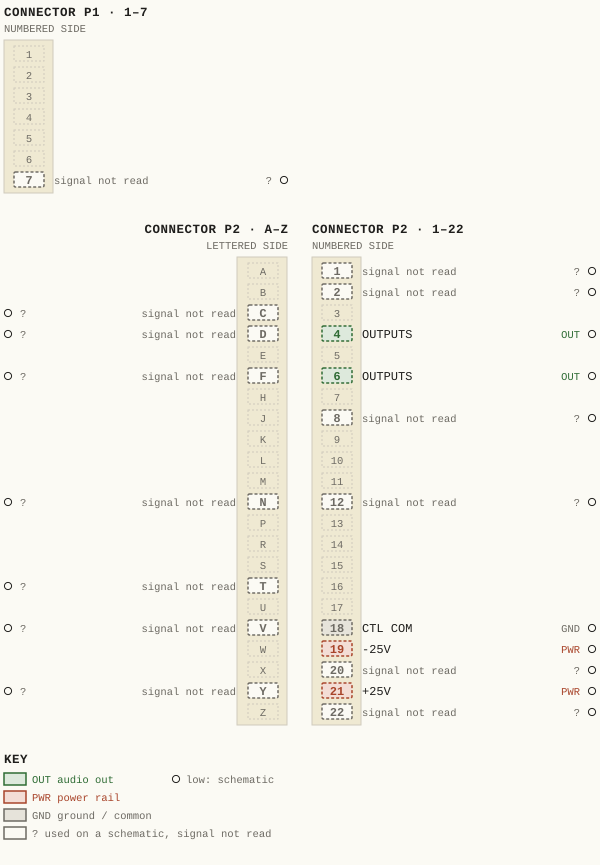
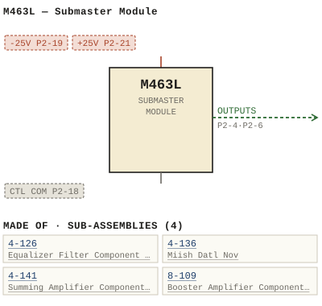

M463L — Submaster Module
| Type | module |
| Category | SUMMING |
| Try it | simulator & front panel · download package (zip) |
| Earliest dated evidence | 1974|7 — title-block date |
| Evidence | "DATE DEC 74" in PUBLIC/Manuals + tech DOCUMENTS/Modules/M463L - Submaster Module/M463L - P050 - B4-141-06-001 R.jpg |
| Confidence | high |
| All years found | 1974|7, 1976|9, 1983|16 |
| Variants | M463, M463A, M463AB, M463AC, M463B, M463J, M463K, M463LA |
| Folder | Modules/SUMMING/M463L |
Connections and circuit (ideal SPICE model)
Inputs, outputs, power and control as its own documents name them (no RTO-144 sheet for it: pin numbers only where the page gives them). Run the generator, turn the gain, watch the VU.
Pictures


M463L.pinout.svg

M463L.connections.svg 1974 - 4-141-02-001 - 4-141 SUMMING AMPLIFIER SCHEMATIC - DRN DM - ISS 8.jpg
1974 - 4-141-02-001 - 4-141 SUMMING AMPLIFIER SCHEMATIC - DRN DM - ISS 8.jpg 1974 - M463L - 4-126-06-001 - SOCCKES ADDEI.jpg
1974 - M463L - 4-126-06-001 - SOCCKES ADDEI.jpg 1974 - M463L - 4-141-02-001 - TORY SELECTED JAL VALE.jpg
1974 - M463L - 4-141-02-001 - TORY SELECTED JAL VALE.jpg 1974 - M463L - 4-141-06-001 - OPL ZOO RII.jpg
1974 - M463L - 4-141-06-001 - OPL ZOO RII.jpg 1976 - M463L - 4-126-02-001 - EQUALIZER FILIER ISCALE AMPLIFIER SCHEMATX.jpg
1976 - M463L - 4-126-02-001 - EQUALIZER FILIER ISCALE AMPLIFIER SCHEMATX.jpg 1983 - M463L - P028 - 4-141.jpg
1983 - M463L - P028 - 4-141.jpg 1983 - M463L - P032 - 4-126.jpg
1983 - M463L - P032 - 4-126.jpg 1974 - M463L - 1.jpg
1974 - M463L - 1.jpg 1974 - M463L - 1_small.jpg
1974 - M463L - 1_small.jpg 1974 - M463L - 2.jpg
1974 - M463L - 2.jpg 1974 - M463L - 2_small.jpg
1974 - M463L - 2_small.jpg 1974 - M463L - 3.jpg
1974 - M463L - 3.jpg 1974 - M463L - 3_small.jpg
1974 - M463L - 3_small.jpg 1974 - M463L - 4-126-02-001 - IOK COMBINED COMBINED VALLE VALUE.jpg
1974 - M463L - 4-126-02-001 - IOK COMBINED COMBINED VALLE VALUE.jpg 1974 - M463L - 4-126-06-001 - ISSMOD ICKD USED.jpg
1974 - M463L - 4-126-06-001 - ISSMOD ICKD USED.jpg 1974 - M463L - 4-136-06-019 - JIS JII.jpg
1974 - M463L - 4-136-06-019 - JIS JII.jpg 1974 - M463L - 4-141-02-001.jpg
1974 - M463L - 4-141-02-001.jpg 1974 - M463L - 4-141-06-001 - ARE FACTORY SELECTED.jpg
1974 - M463L - 4-141-06-001 - ARE FACTORY SELECTED.jpg 1974 - M463L - 461-03-015 - COMPONENT SIDF NOTES LEGEND CONNECTOR PIN MOUNTED.jpg
1974 - M463L - 461-03-015 - COMPONENT SIDF NOTES LEGEND CONNECTOR PIN MOUNTED.jpg 1974 - M463L - 463-01-011 - CONTROL SOLO SOLO CONTROL SOLO COMMON CONTROL.jpg
1974 - M463L - 463-01-011 - CONTROL SOLO SOLO CONTROL SOLO COMMON CONTROL.jpg 1974 - M463L - 463-01-011 - INSERT INSERT JACKS FADER.jpg
1974 - M463L - 463-01-011 - INSERT INSERT JACKS FADER.jpg 1974 - M463L - 463-02-011 - ATE BELLI SUB.jpg
1974 - M463L - 463-02-011 - ATE BELLI SUB.jpg 1974 - M463L - 463-04-023 - ENG SUBMA STER MODULE.jpg
1974 - M463L - 463-04-023 - ENG SUBMA STER MODULE.jpg 1974 - M463L - 463-04-024 - CONNECTOR REAR VIEW.jpg
1974 - M463L - 463-04-024 - CONNECTOR REAR VIEW.jpg 1974 - M463L - 463-04-024 - OUTPUT AMP UPPER LEGEND.jpg
1974 - M463L - 463-04-024 - OUTPUT AMP UPPER LEGEND.jpg 1974 - M463L - 8-109-02-002 - OUTPUT AMPLIFIER.jpg
1974 - M463L - 8-109-02-002 - OUTPUT AMPLIFIER.jpg 1974 - M463L - 8-109-02-002 - RII RIZ.jpg
1974 - M463L - 8-109-02-002 - RII RIZ.jpg 1974 - M463L - 8-109-02-007 - NDMINAL VALUE.jpg
1974 - M463L - 8-109-02-007 - NDMINAL VALUE.jpg 1974 - M463L - 8-109-02-007 - RII RIZ.jpg
1974 - M463L - 8-109-02-007 - RII RIZ.jpg 1974 - M463L - 8-109-06-002 - RAS COMPONENT LAYOUT.jpg
1974 - M463L - 8-109-06-002 - RAS COMPONENT LAYOUT.jpg 1974 - M463L - 8-109-06-002.jpg
1974 - M463L - 8-109-06-002.jpg 1974 - M463L - 8-109-06-007 - BOOSTER AMPLIFIER.jpg
1974 - M463L - 8-109-06-007 - BOOSTER AMPLIFIER.jpg 1974 - M463L - 8-109-06-007 - DRI ENG.jpg
1974 - M463L - 8-109-06-007 - DRI ENG.jpg 1974 - M463L - P001 - Title Page.jpg
1974 - M463L - P001 - Title Page.jpg 1974 - M463L - P002.jpg
1974 - M463L - P002.jpg 1974 - M463L - P003 - 1-1.jpg
1974 - M463L - P003 - 1-1.jpg 1974 - M463L - P004 - 2-1.jpg
1974 - M463L - P004 - 2-1.jpg 1974 - M463L - P005 - 2-2.jpg
1974 - M463L - P005 - 2-2.jpg 1974 - M463L - P006 - 2-3.jpg
1974 - M463L - P006 - 2-3.jpg 1974 - M463L - P007 - 2-4.jpg
1974 - M463L - P007 - 2-4.jpg 1974 - M463L - P008 - 3-1.jpg
1974 - M463L - P008 - 3-1.jpg 1974 - M463L - P009 - 3-2.jpg
1974 - M463L - P009 - 3-2.jpg 1974 - M463L - P010 - 3-3.jpg
1974 - M463L - P010 - 3-3.jpg 1974 - M463L - P011 - 4-1.jpg
1974 - M463L - P011 - 4-1.jpg 1974 - M463L - P012 - 4-2.jpg
1974 - M463L - P012 - 4-2.jpg 1974 - M463L - P013 - 4-3.jpg
1974 - M463L - P013 - 4-3.jpg 1974 - M463L - P014 - 4-4.jpg
1974 - M463L - P014 - 4-4.jpg 1974 - M463L - P015 - 4-5.jpg
1974 - M463L - P015 - 4-5.jpg 1974 - M463L - P016 - 4-6.jpg
1974 - M463L - P016 - 4-6.jpg 1974 - M463L - P017 - 4-7.jpg
1974 - M463L - P017 - 4-7.jpg 1974 - M463L - P018 - 4-8.jpg
1974 - M463L - P018 - 4-8.jpg 1974 - M463L - P019 - 4-9.jpg
1974 - M463L - P019 - 4-9.jpg 1974 - M463L - P020 8-109.jpg
1974 - M463L - P020 8-109.jpg 1974 - M463L - P021 - 8-109-1-1.jpg
1974 - M463L - P021 - 8-109-1-1.jpg 1974 - M463L - P022 - 8-109-1-2.jpg
1974 - M463L - P022 - 8-109-1-2.jpg 1974 - M463L - P023 - 8-109-2-1.jpg
1974 - M463L - P023 - 8-109-2-1.jpg 1974 - M463L - P024 - 8-109-2-2.jpg
1974 - M463L - P024 - 8-109-2-2.jpg 1974 - M463L - P025 - 8-109-2-3.jpg
1974 - M463L - P025 - 8-109-2-3.jpg 1974 - M463L - P026 - 8-109-2-4.jpg
1974 - M463L - P026 - 8-109-2-4.jpg 1974 - M463L - P027 - 8-109-2-5.jpg
1974 - M463L - P027 - 8-109-2-5.jpg 1974 - M463L - P029 - 4-141 1-1.jpg
1974 - M463L - P029 - 4-141 1-1.jpg 1974 - M463L - P030 - 4-141 2-1.jpg
1974 - M463L - P030 - 4-141 2-1.jpg 1974 - M463L - P031 - 4-141 2-2.jpg
1974 - M463L - P031 - 4-141 2-2.jpg 1974 - M463L - P033 - 4-126 1-1.jpg
1974 - M463L - P033 - 4-126 1-1.jpg 1974 - M463L - P034 - 4-126 2-1.jpg
1974 - M463L - P034 - 4-126 2-1.jpg 1974 - M463L - P035 - 4-126 2-2.jpg
1974 - M463L - P035 - 4-126 2-2.jpg 1974 - M463L - P036 - 4-126 2-3.jpg
1974 - M463L - P036 - 4-126 2-3.jpg 1974 - M463L - P037 - 6-1.jpg
1974 - M463L - P037 - 6-1.jpg 1974 - M463L - P038 - 6-2.jpg
1974 - M463L - P038 - 6-2.jpg 1974 - M463L - P039 - 6-3.jpg
1974 - M463L - P039 - 6-3.jpg 1974 - M463L - P042 - LB463-02-011 001.jpg
1974 - M463L - P042 - LB463-02-011 001.jpg 1974 - M463L - P042 - LB463-02-011 002.jpg
1974 - M463L - P042 - LB463-02-011 002.jpg 1974 - M463L - P042 - LB463-02-011 003.jpg
1974 - M463L - P042 - LB463-02-011 003.jpg 1974 - M463L - P042 - LB463-02-011 004.jpg
1974 - M463L - P042 - LB463-02-011 004.jpg 1974 - M463L - wbsps - module - m463l submaster module 001_small.jpg
1974 - M463L - wbsps - module - m463l submaster module 001_small.jpg 1978 - 8-109-02-002 - 8-109 A OUTPUT AMPLIFIER SCHEMATIC - DRN GEB - ENG MRW - ISS 1.jpg
1978 - 8-109-02-002 - 8-109 A OUTPUT AMPLIFIER SCHEMATIC - DRN GEB - ENG MRW - ISS 1.jpg 1978 - 8-109-02-007 - 8-109F BOOSTER AMPLIFIER SCHEMATIC - DRN GEB - ENG MRW - ISS 1.jpg
1978 - 8-109-02-007 - 8-109F BOOSTER AMPLIFIER SCHEMATIC - DRN GEB - ENG MRW - ISS 1.jpg 19xx - 8-109-02-002.jpg
19xx - 8-109-02-002.jpgPrice history
| Year | Kind | Price | Listed as | Effective | Source |
|---|---|---|---|---|---|
| 2005|38 | used market value | 100.00 | M463L Sub master | wbsps - website ARCHIVE/WBSPS 2008/ARCHIVE/old website/PriceGuide.htm | |
| 2006|39 | used market value | 100.00 | M463L Sub master | wbsps - website ARCHIVE/WBSPS 2008/ARCHIVE/jan 2006 shell/priceguide.htm |
Pinout & connections
Each contact as its own documents name it: 5 named (5 low confidence). An empty slot is a contact no page names. Hover a contact for its source; the table under the drawing lists them.
pinout (SVG) · connections (SVG) · pins (JSON)
Pin evidence — 19 contacts
| Pin | Signal | Kind | Confidence | Read from | Source |
|---|---|---|---|---|---|
| P1-7 | — | used on a schematic, signal not read | low | schematic | 1974 - M463L - 463-02-011 - ATE BELLI SUB.jpg, p. 1 “>P1-7” |
| P2-1 | — | used on a schematic, signal not read | low | schematic | 1974 - M463L - Submaster Module (2).pdf, p. 43 “P2 - 1~” |
| P2-2 | — | used on a schematic, signal not read | low | schematic | 1974 - M463L - Submaster Module (2).pdf, p. 43 “P2-2(B ~ .H'.~ ~"'I> T O i!1 - 24-” |
| P2-C | — | used on a schematic, signal not read | low | schematic | 1974 - M463L - 463-02-011 - ATE BELLI SUB.jpg, p. 1 “DIRECT >P2-12 OTPUT P2-N +8dBm NoMiNAL P?-3 Mi PZ-C Left P2-4 outputs M3 Pz-D” |
| P2-D | — | used on a schematic, signal not read | low | schematic | 1974 - M463L - 463-02-011 - ATE BELLI SUB.jpg, p. 1 “DIRECT >P2-12 OTPUT P2-N +8dBm NoMiNAL P?-3 Mi PZ-C Left P2-4 outputs M3 Pz-D” |
| P2-4 | OUTPUTS | audio out | low | schematic | 1974 - M463L - 463-02-011 - ATE BELLI SUB.jpg, p. 1 “DIRECT >P2-12 OTPUT P2-N +8dBm NoMiNAL P?-3 Mi PZ-C Left P2-4 outputs M3 Pz-D” |
| P2-F | — | used on a schematic, signal not read | low | schematic | 1974 - M463L - 463-02-011 - ATE BELLI SUB.jpg, p. 1 “P?-5 M2 PZ-= Rigkt OUTPuts P2-6 M4 P2-F 7P1-I2” |
| P2-6 | OUTPUTS | audio out | low | schematic | 1974 - M463L - 463-02-011 - ATE BELLI SUB.jpg, p. 1 “P?-5 M2 PZ-= Rigkt OUTPuts P2-6 M4 P2-F 7P1-I2” |
| P2-8 | — | used on a schematic, signal not read | low | schematic | 1974 - M463L - P042 - LB463-02-011 004.jpg, p. 1 “P2 -8” |
| P2-N | — | used on a schematic, signal not read | low | schematic | 1974 - M463L - 463-02-011 - ATE BELLI SUB.jpg, p. 1 “DIRECT >P2-12 OTPUT P2-N +8dBm NoMiNAL P?-3 Mi PZ-C Left P2-4 outputs M3 Pz-D” |
| P2-12 | — | used on a schematic, signal not read | low | schematic | 1974 - M463L - 463-02-011 - ATE BELLI SUB.jpg, p. 1 “DIRECT >P2-12 OTPUT P2-N +8dBm NoMiNAL P?-3 Mi PZ-C Left P2-4 outputs M3 Pz-D” |
| P2-T | — | used on a schematic, signal not read | low | schematic | 1974 - M463L - 463-02-011 - ATE BELLI SUB.jpg, p. 1 “>P2-T” |
| P2-V | — | used on a schematic, signal not read | low | schematic | 1974 - M463L - 463-02-011 - ATE BELLI SUB.jpg, p. 1 “P2-V” |
| P2-18 | CTL COM | ground / common | low | schematic | 1974 - M463L - 463-02-011 - ATE BELLI SUB.jpg, p. 1 “Pz-18 CTL Com” |
| P2-19 | -25V | power rail | low | schematic | 1974 - M463L - Submaster Module.pdf, p. 43 “C36 CR4 22/25 Imaoo3 Ri22 c47 ISk 0 RzS Pnsas 1zs K2 Av9L4s CR? 353 -25v P2-19 04 Inoo} Tip908” |
| P2-20 | — | used on a schematic, signal not read | low | schematic | 1974 - M463L - P042 - LB463-02-011 001.jpg, p. 1 “569 1nk4oos Q1 8n3S69 Tipz9b Ri24 c46 |eol2s Q5 33 R12i Pn3sc9 ISk CR? C35 R33 22/25 4Rk 1n4009 P2-20 C36 CRA 22/25 1ma003 Ri22 C47 ISk R12…” |
| P2-Y | — | used on a schematic, signal not read | low | schematic | 1974 - M463L - P042 - LB463-02-011 003.jpg, p. 1 “P2-Y” |
| P2-21 | +25V | power rail | low | schematic | 1974 - M463L - Submaster Module.pdf, p. 43 “+25v P2-21” |
| P2-22 | — | used on a schematic, signal not read | low | schematic | 1974 - M463L - P042 - LB463-02-011 001.jpg, p. 1 “P2-22” |
Dates found in the documents
Physical manual inventory
| Item | Location | Status | Scanned |
|---|---|---|---|
| M463LA - Submaster Module | DUPLICATE | PDF - Already scanned | |
| M463L - Submaster Module | DUPLICATE | SCANNED BUT NEEDS STICHING | |
| M463LA - Submaster Module | DUPLICATE | SCANNED BUT NEEDS STICHING | |
| M463L - Submaster Module | PDF - Already scanned | ||
| M463L - Submaster Module | Recently scanned and stiched by WB |
Documents (2)
| Year | File | |
|---|---|---|
| 1974|7 | 1974 - M463L - Submaster Module (2).pdf | note |
| 1974|7 | 1974 - M463L - Submaster Module.pdf | note |
Photos & scans (78)


Sub-assemblies & parts used (4)
| Item | What | Family | Year | How we know |
|---|---|---|---|---|
| 4-126 | Equalizer Filter Component Assembly | Sub-assemblies (n-nnn) | 1972|5 | drawing filed with it |
| 4-136 | Miish Datl Nov | Sub-assemblies (n-nnn) | drawing filed with it | |
| 4-141 | Summing Amplifier Component Layout | Sub-assemblies (n-nnn) | 1974|7 | drawing filed with it |
| 8-109 | Booster Amplifier Component Layout | Sub-assemblies (n-nnn) | 1974|7 | drawing filed with it |
Parts list — board 1974 - M463L - Submaster Module (2) (5 parts)
From 1974 - M463L - Submaster Module (2).pdf; also in timelines/data/bom.csv.
| Ref | Part | Value | Manufacturer | Mfr part no. |
|---|---|---|---|---|
| C6 | Cap acitor | 4.7 pF | Phil i ps | 2222-638-09478 |
| R5 | Re s i stor 1/ 4W 5% 30 K | P h i li p s | ||
| R15 | Res is tor 1/4W 5% 9K l | P h i l ips | ||
| C6 | Capac i t or | 4 .7 p F | Ph il i ps | 2222- 638 -09478 |
| R15 | Res i s t or 1/ 4 W 5% 240 |
From the manuals
Each manual split into its sections. Text that is the same in many Ward-Beck manuals (warranty, address, standard notes) is kept once on the Boilerplate page and linked.
General description (9)
Description — 158 words · 1974 - M463L - Submaster Module (2).pdf, page 21
8-109 AMPLIFIER SERIES
Un it Ga in
Noise: -108 dBm EIN from 20 Hz to 20 kHz.
Source Impedance: 600 ohms or less, balanced or unbalanced.
spec if ications above.) .c ps
Output Impedance: Less than 100 ohms. BS
Load Impedance: 600 ohms, balanced. //W : tp ht
8-109-1-1
WARD-BECK SYSTEMS LTD. . T
8-109 AMPLIFIER SERIES
Output Level : +30 dBm max imum.
8-109-1-2
W ARD-BECK SYSTEMS L TD .
PARTS LI ST
8-109 AMPLIF IER SERIES
8-109
Rl ps
Resistor 1/4W 5% 47K Phi lips R2 47K " BS
• R3 6K2 R4 6K2 //W
R5 ,,' 6K2 : tp ht
8-109- 2-1
WARD-BECK SYSTEMS LTD .
PARTS L IST
8-109 AMPLIF IER SER IES 8-109
PART DESC RIPTION MFG MFG PART NUMBER
R36 .c
4K7 R37 4K7 ps
R38 " delete BS
Zl In teg rated Circuit Na t ion a l //W
LF356N Z2 " " : tp
8-109-2-2 ht
WARD-BEC K SYSTEMS LTD
Also: general boilerplate (7 devices) · general boilerplate (7 devices) · general boilerplate (7 devices) · general boilerplate (7 devices) · general boilerplate (7 devices) · general boilerplate (8 devices) · general boilerplate (7 devices) · general boilerplate (7 devices) · general boilerplate (7 devices) · general boilerplate (7 devices) · general boilerplate (7 devices) · general boilerplate (8 devices) · general boilerplate (7 devices) · general boilerplate (7 devices) · general boilerplate (7 devices) · general boilerplate (7 devices) · general boilerplate (7 devices) · general boilerplate (7 devices) · general boilerplate (7 devices) · general boilerplate (7 devices) · general boilerplate (7 devices)
- source: 1974 - M463L - Submaster Module (2).pdf, p. 21
Description — 290 words · 1974 - M463L - P005 - 2-2.jpg, page 1
M463L_SUBMASTER_MODULE bandpass filter passes only portion the signal delivered from the buffer, with the center frequency and bandwidth determined by the FREQUENCY , "Q" and PEAK/SHELF controls . The HIGH FREQUENCY equalization continuously adjustable from kHz and controlled by RI/R2 R21 determines the amount cuT BOOST total range from +15 dB provided With SWI depressed the unit wili produce high frequency SHELVING characteristic.
When Swi released, both positive negative PEAKING can be obtained. The control R3 effective only with SW1 the PEAKING mode and covers 0-factor range The MId FREQUENCY equalization adjusted by RA/R5 , covering frequency range from 0.4 kHz cut/boost controlled by R22 R6 adjusts the 0-factor_ Positive negative bell-shaped PEAKING equalization applicable the mid-frequency range- The LOw FREQUENCY equalization operates similarly the high frequency section.
R7/R8 adjusts the frequency range from 400 Hz . cut BOOST are controlled by R23, by R9 and SW12 determines the choice either SHELVING PEAKING characteristics_ The three signals which leave the 4-126 filter are correction signals" either in-phase 180 degrees out-of-phase with the equalizer input ana bandpass limited determined by the equalizer section and control settings These correction signals are then summed together with the primary input) signal by tne operational amplifiers 21 , 22 and 24 thus forming the equalized output signal_ This concept adding correction signal together with the incoming signal form the equalized signa directly responsible for the low noise and distortion capabilities this unit The compound signal as generated long the entire processing chain appears the output 24 _ From here routed one the normally open contacts the EQUAL IZER INSERT switch SW13 _ Thus with SW13 depressed the equalized signal fed the output amplifier 8-109A .
addition, as SW13 depressed, the LED indi- cator activated_ 2-2
- source: 1974 - M463L - P005 - 2-2.jpg, p. 1
Description — 275 words · 1974 - M463L - P004 - 2-1.jpg, page 1
M463L SUBMASTER MODULE The M463L combination SUBMASTER/EQUALIZER module, designed combined mixed feeds from previousiy assigned mixing accept channel inputs. As may be required the unit processes the mixed signal, equalizes and routes the appropriate points within the console system. Input and Summing Amp ifiec The signal orignating from the external mixing network applied the edge connector pins and and subsequently connects the current nodes the 4-141 summing amplifier To facilitate summing module testing, direct input provided on P1 , pins and EQUALIZER Section The output the 4-141 summing amplifier routed one the normally closed contacts the EQUALIZER INSERT switch SW13 allow bypassing the equalizer Additionally _ the 4-141 output fed 21, the first four cascaded summing amplifiers through 24.
through 24 serve as mixing and isolation amplifiers They are used mix the primary input signal with correction signal derived Trom the outputs the 4-126 filter networks; resulting raising lowering thc level selected portions the audio spectrum Additionally they isolate the filter networks from each other and prevent interaction between them resulting accurate and repeat- able equalizing performance The cut/boost controis R2I R22 and R23 feed an in-phase out- proportional signal the buffer amplifiers 25, 26 oT-phase and 28 respectively The level the signal fed the buffers dependent on the cut/boost control setting with maximum level occurring either end the potentiometer, and nuli setting the potentio- meter mid-position Full clockwise full counterclockwise potentio- meter settings result the maximum equalization +15 dB and -15 dB respectively _ The outputs buffer amplifiers 25, 26 and Z8 are routed the 4-126 printed circuit board which contains three bandpass filters corresponding each the three sections the equalizer .
Each 2-1
- source: 1974 - M463L - P004 - 2-1.jpg, p. 1
- also in: 1974 - M463L - Submaster Module.pdf, p. 21 · 1974 - M463L - P033 - 4-126 1-1.jpg, p. 1 · 1974 - M463L - P006 - 2-3.jpg, p. 1 · 1974 - M463L - P007 - 2-4.jpg, p. 1 · 1974 - M463L - P029 - 4-141 1-1.jpg, p. 1 · 1974 - M463L - P022 - 8-109-1-2.jpg, p. 1
Specifications (1)
Technical Data — 169 words · 1974 - M463L - P003 - 1-1.jpg, page 1
M463L SUBMASTER_MODULE Gain: +18 dB +/ - 0.5 dB . (bridging gain) (With fader dB "in-hand" position. Frequency Response: 0.25 dB from 20 Hz to 20 kHz . (Equalizer bypass position. Noise: dB below dBm nominal output level 20Hz to 20 kHz) _ Harmonic Distortion: Less than 25% from Hz 20 kHz +28 dBm less Typically less than 0.05% across mos" bandwidth) Source Impedances Summing 30, 000 ohms balanced Direct: 600 ohms less balanced Input Impedances Summing: Less than Direct: 30,000 ohms ohms Output Impedance: Less than 100 ohms (at ouiputs 8-109A amplifiers only ) 8-109F Load Impedance: 600 ohms balanced (at insertion point and DIRECT output) Output Level dBm nominal insertion +8 dBm nominal DIRECT output +30 dBm maximum (at outputs 8-109F 8-109A amplifiers only Phasing: Input and outpu terminals designated by numbers are in phase.
Power Requirements: volts dc, 100 MA nominal 300 MA maximum Ambient Temperature: degrees Celsius. Dimensions: wide 14.5" high 6.5" deep (41 mm 360 Mm 165 Mm ) Weight: ozs (1150 gms) E
- source: 1974 - M463L - P003 - 1-1.jpg, p. 1
Operation (1)
Controls — 111 words · 1974 - M463L - P037 - 6-1.jpg, page 1
M463L SUBMASTER_MODULE MASTER ASSIGNMENT switches Sw22 and SW23 : When depressed LEFT output signal fed via summing resistors externa master summing duses Mi andfor M3 respectively. PUBL IC ADDRESS switch Sw3: With switch depressed, the output signal fed the PA output _ PRE/POST PUBLIC ADDRESS switch Sw4: Allows the choice the pick-off point for the PUBLIC ADDRESS signal either prior (PRE) after (PoST the submaster fader 4 ) REV SEND switches SWS and SW6: With either switch depre essed (ne output signal fed the appropriate RS output _ FOLDBACK switches SW7 SW8 depressed the ouiput signal SW9 and SWIO: With any switch fed the appropriate FB output hiGH FREQUENCY section: FREQUENCY
- source: 1974 - M463L - P037 - 6-1.jpg, p. 1
Maintenance & alignment (1)
Adjustment — 36 words · 1974 - M463L - P037 - 6-1.jpg, page 1
control R4/5: Continuously variable from 0.4 4-kHz The calibration refers the center frequency the bel l-shaped PEAKING response curve_ 10) MID FREQUENCY section 0-ADJUSTMENT R6: Allows adjustment the O-factor the PEAKING filter for values from 10
- source: 1974 - M463L - P037 - 6-1.jpg, p. 1
Parts list (text) (7)
Parts List — 144 words · 1974 - M463L - Submaster Module (2).pdf, page 25
8-109 AMPLIFIE R SER IE S
8-109A
PART DESCRIPTI ON MFG MFG PART NUMBER
R8 470 R9 33 K R38 " 620K
8- 109B
8-109C
PARTS DESCR IPT ION MFG MF G PART NUMBER
Cll " " ps
8-109-2-3
WARD-BECK SYSTEMS LTD . QT
I 8- 1090 PARTS LI ST
8-109 A MPL I F I ER SERIES
PART DESCR I PTION MFG MFG PART NUMBE R
R8 470 R9 75K R38 1M "
8-109E
PART DESCRIPT ION MFG MFG PART NUMBER
8-109F
Cl1 " ps
. BS
R15 Res istor 1/4W 5% 510 ://W tp ht
8- 109-2-4
WARD-BECK SYSTEMS LTD
8-109 AMPLIFIER SERIES
8-109G
PART DESCIPTION MFG MFG PART NUMBER
R15 Res i s tor 1/ 4W 5% 2K4
a .c ps BS //W : tp ht
8-109-2-5
WAF:lO-B E CK SYSTEMS L.TO .
a .c ps BS W :// tp ht
Also: parts boilerplate (7 devices) · parts boilerplate (7 devices) · parts boilerplate (7 devices) · parts boilerplate (7 devices) · parts boilerplate (7 devices) · parts boilerplate (7 devices) · parts boilerplate (7 devices) · parts boilerplate (7 devices) · parts boilerplate (7 devices) · parts boilerplate (7 devices) · parts boilerplate (7 devices) · parts boilerplate (7 devices) · parts boilerplate (7 devices) · parts boilerplate (7 devices) · parts boilerplate (7 devices) · parts boilerplate (7 devices) · parts boilerplate (7 devices) · parts boilerplate (7 devices) · parts boilerplate (7 devices) · parts boilerplate (7 devices)
- source: 1974 - M463L - Submaster Module (2).pdf, p. 25
Parts List — 103 words · 1974 - M463L - P030 - 4-141 2-1.jpg, page 1
4-141 summing AMPLIFIER PART DESCRIPT ION MFG MFG PART_NUMBER Capacitor 330 uF/6 330 uF/6 6800 100 pF 220 pF Kemet T390F 337MOO6A5 Aselco Philips co92-MC-100-682M 2222 638-70101 2222-630-03221 5800 pF 100 pF 220 pF 33 uF/10 1000 pF Aselco Philips co92-MC-100-682m 2222-638-70101 2222- 530-03221 T390D336M010AS co92-MC-100-102m Kemet Aselco 330 pF Philips 2222-630-03331 2222-638-70479 ete Capacitor 100 3.3 2222- 638- 70101 2222-638-09338 C15 uF/1o 10 uF/25 uF/25 uF/35 uF/35 Kemet T3900336M01OAS T390C1O6MO25AS T390B105M035AS c20 C21
pF pF 220 Philips 2222-638-03278 2222-630 03221 Transistor National PN3569 PNS 138 PN3569 PNS138
Resistor 1/4w 59 47K 47K 7k5 1KB Philips 8 R6 R7 15K 100
4-141 2-1
- source: 1974 - M463L - P030 - 4-141 2-1.jpg, p. 1
Parts List — 122 words · 1974 - M463L - P035 - 4-126 2-2.jpg, page 1
4-126 EQUAL IZER FILTER AMPLIFIER PART DESCRIPION MFG MFG PART_NUMBER Resistor 1/4w 5% 10K 10K 620 22K = TK Philips -
RZ RL R5 `
R6 R7 R8 _ R9 R1O 22k IM 6K2 4K7 620 '
RII R12 R13 R14 R15 IM 6K2 620 10K 10K
.
.` . ^
R16 R17 . R18 R19 R2o 620 22K
2 .
22k IM
. `
R2i R22 R23 R24 R25 6K2 delete Resistor 1/4w 5% 6k2 IM delete ` ' ` ` delete
.: . R26 To R37 . 4. ` ' ' R38 Resistor 1/4w 5% R39 R4o R4) R42 10K 10k 620 22k TK Philips . `s . . ^ ` .
R43 R44 22k 1M
. .
4-126 2-2
- source: 1974 - M463L - P035 - 4-126 2-2.jpg, p. 1
- also in: 1974 - M463L - Submaster Module.pdf, p. 26 · 1974 - M463L - P026 - 8-109-2-4.jpg, p. 1 · 1974 - M463L - P025 - 8-109-2-3.jpg, p. 1 · 1974 - M463L - P027 - 8-109-2-5.jpg, p. 1
Drawings (22)
Each scan with its trace laid over it: the slider runs from the scan to the vector drawing. Click one to see it large and save it as SVG, DXF, KiCad, PDF or PowerPoint.
Control Solo Solo Control Common Solo Controlviewer
Insert Insert Jacks Faderviewer
1974 - M463L - 4-126-02-001 - IOK COMBINED COMBINED VALLE VALUEviewer
1974 - M463L - 4-141-02-001 - TORY SELECTED JAL VALEviewer
1974 - M463L - 4-141-02-001viewer
Sub Master Moduieviewer
Output Amplifier Schematicviewer
Rii Rizviewer
1974 - M463L - 8-109-02-007 - NDMINAL VALUEviewer
1974 - M463L - 8-109-02-007 - RII RIZviewer
4-141 SUMMING AMPLIFIER / SCHEMATICviewer
1976 - M463L - 4-126-02-001 - EQUALIZER FILIER ISCALE AMPLIFIER SCHEMATXviewer
8-109 A / OUTPUT AMPLIFIER / SCHEMATICviewer
8-109F / BOOSTER AMPLIFIER / SCHEMATICviewer
19xx - 8-109-02-002viewer
1974 - M463L - 4-126-06-001 - ISSMOD ICKD USEDviewer
1974 - M463L - 4-126-06-001 - SOCCKES ADDEIviewer
Master Module Component Layout Finsviewer
1974 - M463L - 4-141-06-001 - ARE FACTORY SELECTEDviewer
1974 - M463L - 4-141-06-001 - OPL ZOO RIIviewer
1974 - M463L - 8-109-06-002 - RAS COMPONENT LAYOUTviewer
1974 - M463L - 8-109-06-002viewer
1974 - M463L - 8-109-06-007 - BOOSTER AMPLIFIERviewer
1974 - M463L - 8-109-06-007 - DRI ENGviewer
Subma Ster Module Front Panelviewer
Sub-Master Module Connector Rear Viewviewer
Output Amp Upper Legendviewer
Component Sidf Notes Legend Connector Pin Mountedviewer
Read from the drawing title blocks.
| Drawing | Title | Date | Drawn by | Checked by | Iss. | Source |
|---|---|---|---|---|---|---|
| — | Summing Amplifier | 1974|7 | OM | file p.63 | ||
| 4-126-06-001 | Equalizer Filter Component Assembly | 1974|7 | file p.67 | |||
| 4-141-02-001 | Wote Tefo | 1974|7 | OM | file p.61 | ||
| 4-141-02-001 | Summing Amplifier Schematic | 1974|7 | DM | S | file p.61 | |
| 4-141-06-001 | Summing Amplifier Component Layout | 1974|7 | DM | file p.63 | ||
| B 4-141-02-001 | 4-141 SUMMING AMPLIFIER / SCHEMATIC | 1974|7 | DM | 8 | file | |
| B 8-109-02-002 | 8-109 A / OUTPUT AMPLIFIER / SCHEMATIC | 1978|11 | GEB (Gerry E. Bell) | 1 | file | |
| B 8-109-02-007 | 8-109F / BOOSTER AMPLIFIER / SCHEMATIC | 1978|11 | GEB (Gerry E. Bell) | 1 | file | |
| — | Lla Component Layout | GEB (Gerry E. Bell) | file p.59 | |||
| 4-136-06-019 | Jis Jii | file | ||||
| 461-03-015 | Component Sidf Notes Legend Connector Pin Mounted | file | ||||
| 463-01-011 | Insert Insert Jacks Fader | file | ||||
| 463-01-011 | Control Solo Solo Control Solo Common Control | file | ||||
| 463-01-011 | Submaster Module | file p.42 | ||||
| 463-01-011 | Control Ysolo Solo Control Common Solo Control | file p.42 | ||||
| 463-02-011 | Ate Belli Sub | file | ||||
| 463-04-023 | Eng Subma Ster Module | 8 | file | |||
| 463-04-024 | Connector Rear View | file | ||||
| 463-04-024 | Output Amp Upper Legend | file | ||||
| 8-109-06-002 | Component Layout | file p.55 | ||||
| 8-109-06-002 | Output Amplifier Component Layout | GEB (Gerry E. Bell) | 8 | file p.55 | ||
| B 8-109-02-002 | file |